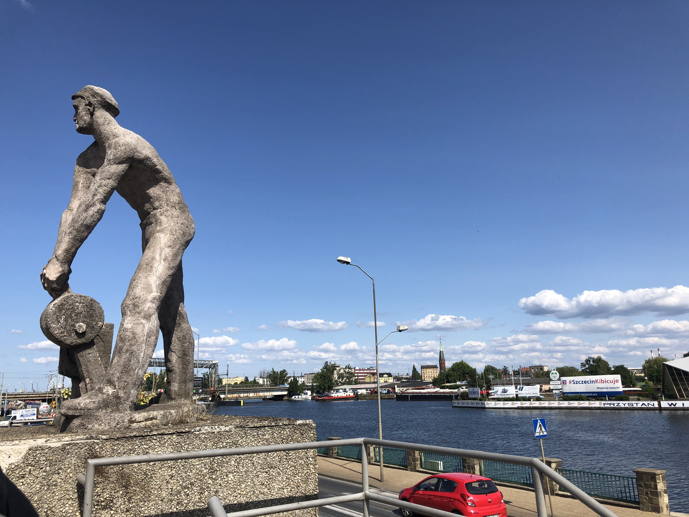

Szczecin
Population of 397573.
Voivodeship: West Pomeranian
Here you can find the Berlin-Szczecin railway. I've been on it a few times when traveling to visit family. For most of my time being spent in a train station, I took this picture of this cool landmark on the left. “The Monument of Railwayman.”